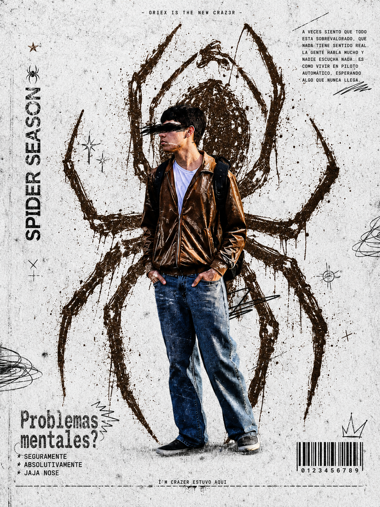

primer post
aqui puedes comenzar a escribir lo que quieras. pensamientos, recuerdos, emociones, experiencias o simplemente cosas que pasan por tu mente.

Cree esta pagina con el objetivo de que el mundo me conozca poco a poco, no solo se quede en un instagram vacio, ya que siento que soy mas completo que todo eso. Aqui subire quien soy y como me siento, como un blog o algo cercano a eso.
aqui puedes comenzar a escribir lo que quieras. pensamientos, recuerdos, emociones, experiencias o simplemente cosas que pasan por tu mente.
puedes transformar esta pagina poco a poco y convertirla en algo mucho mas personal.